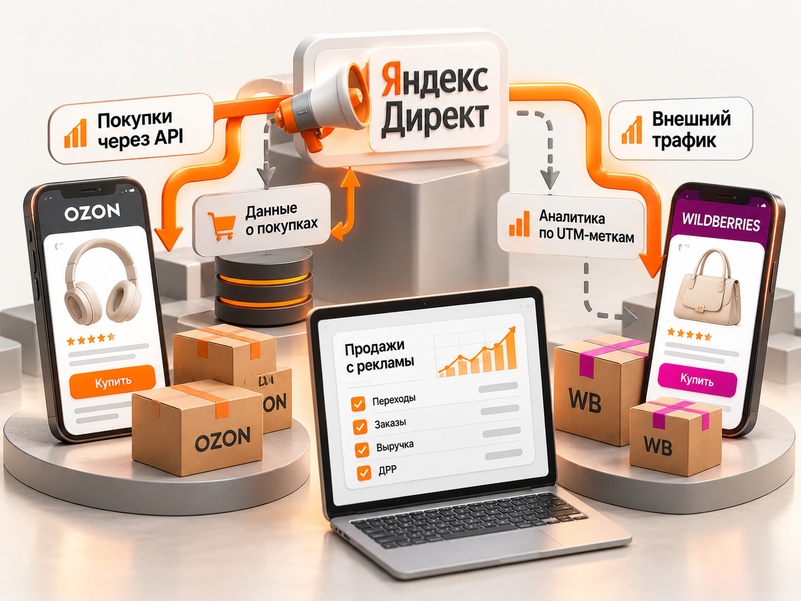
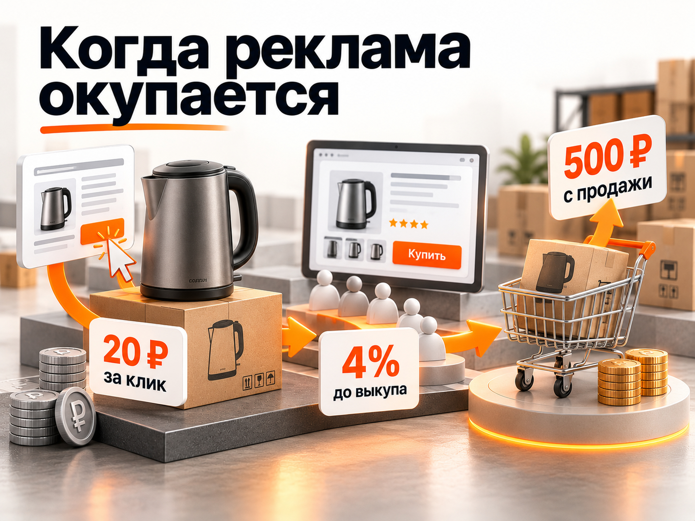

Блог о платном трафике
Продвижение товаров на Wildberries и Ozon через Яндекс Директ: инструкция и прогноз на 2026 год
Реклама товаров на Wildberries и Ozon через Яндекс Директ может приносить дополнительные продажи, но окупается далеко не для каждого продавца. Наиболее перспективны товары с уже сформированным спросом, узнаваемым брендом, конкретной моделью или заметными преимуществами перед конкурентами. Вторая обязательная составляющая - достаточная маржинальность.
Для недорогих товаров без выраженных отличий внешняя реклама нередко оказывается слишком дорогой. Даже если покупатели переходят на карточку и оформляют заказы, расходы могут превышать заработок продавца.
Разберём, какие товары имеет смысл продвигать, какие результаты получали рекламодатели в 2026 году и как рассчитать бюджет до запуска.
Какие товары выгоднее рекламировать через Яндекс Директ
По моему опыту, наиболее предсказуемые результаты получались при продвижении брендированных товаров, которые пользователи искали по конкретному названию или модели.
Например, человек ищет определённую модель техники. Он уже понимает, какой товар ему нужен, и сравнивает предложения продавцов. В такой ситуации реклама может привести покупателя непосредственно на карточку подходящего товара.
С неизвестными товарами ситуация сложнее. Если покупатель видит десятки практически одинаковых предложений, платить за привлечение его внимания за пределами маркетплейса часто невыгодно.
Однако узнаваемость бренда не единственный фактор успешной рекламы.
| Тип товара | Потенциал для внешней рекламы |
|---|---|
| Известный бренд, конкретная модель | Высокий при конкурентной цене и достаточной марже |
| Малоизвестный бренд с уникальными характеристиками | Зависит от спроса, преимуществ и качества карточки |
| Популярный товар с хорошими продажами на маркетплейсе | Подходит для тестирования дополнительного трафика |
| Типовой недорогой товар без преимуществ | Высокий риск неокупаемости |
| Дорогой специализированный товар | Перспективен при точном попадании в спрос и достаточной марже |
Главное правило: выбирать товар для внешней рекламы нужно не только по объёму спроса, но и по вероятности покупки именно у вашего продавца.
Даже хороший CTR и дешёвые переходы не гарантируют продажи. Если у карточки нет преимуществ перед соседними предложениями, сама реклама не исправит отсутствие спроса.
Реальные кейсы продвижения Wildberries и Ozon в 2026 году
Опубликованные результаты показывают, что внешняя реклама способна работать и для известных, и для малоизвестных брендов. Но разброс стоимости заказа и доли рекламных расходов очень большой.
Одежда Pozitiviti на Wildberries
Агентство Verga опубликовало в марте 2026 года кейс продвижения бренда женской одежды Pozitiviti с собственным производством.
За первый месяц работы, в феврале 2026 года, агентство сообщило о следующих результатах:
- Средний чек: 2186 ₽.
- Стоимость привлечения продажи: 325 ₽.
- Доля рекламных расходов: 15%.
- Средняя стоимость клика: 5,31 ₽.
В продвижении использовали Поиск Яндекса, РСЯ и Мастер кампаний. Приоритет отдавали товарам-локомотивам, которые уже пользовались спросом, а не залежавшимся остаткам.
Особенно интересен подход к позиционированию. Рекламодатель выделял качество хлопка, собственное производство и особенности ассортимента вместо конкуренции исключительно по цене.
Это пример успешного продвижения относительно небольшого бренда, однако в кейсе не раскрыта полная прибыль после комиссий, себестоимости и других расходов.
Ноутбуки российского бренда на Ozon
В опубликованном агентством «Натекс» кейсе приведены результаты продвижения ноутбуков малоизвестного российского бренда за март-май 2026 года.
| Показатель | Результат |
|---|---|
| Выручка по заказам | 5 970 584 ₽ |
| Количество заказов | 223 |
| Стоимость заказа | 1877 ₽ |
| ДРР | 7,01% |
Лучше всего сработали единые перфоманс-кампании на Поиске с товарными объявлениями и автотаргетингом.
Брендовые и общие запросы разделяли. Это позволило отдельно оценивать сформированный спрос на производителя и более широкую аудиторию покупателей ноутбуков.
Кейс подтверждает, что малоизвестный бренд необязательно означает плохой результат. Однако высокий средний чек здесь имеет принципиальное значение: стоимость заказа в 1877 ₽ для ноутбука и для недорогого бытового товара имеет совершенно разную экономику.
Недорогие товары на Ozon
В марте 2026 года специалист по рекламе Светлана Бондарь рассказала об опыте продвижения товаров со средним чеком до 600 ₽.
В обученных кампаниях стоимость привлечения заказа составляла 150‑170 ₽, а ДРР достигала 25‑28%.
При попытке снизить целевую стоимость привлечения рекламные кампании практически переставали расходовать бюджет. Объём трафика и заказов падал.
Автор рассматривает такую рекламу в том числе как инструмент развития карточки и увеличения её видимости внутри Ozon.
Но для продавца важно отличать предполагаемый эффект от подтверждённой дополнительной прибыли. Рост позиций или общего объёма заказов не доказывает, что внешняя реклама окупилась.
Что показывают эти кейсы
Разброс ДРР от 7% до 28% в рассмотренных проектах не является рыночной нормой. Это результаты отдельных рекламодателей с разными товарами, ценами и условиями.
Встречаются и гораздо менее успешные результаты. Например, в опубликованном кейсе Владислава Былинкина реклама товаров на Ozon принесла 65 заказов на 131 462 ₽ при расходах 75 000 ₽. Расчётный ДРР составил около 57%. Период теста в публикации не указан, поэтому использовать его как показатель именно за 2026 год нельзя.
Следовательно, главный вопрос перед запуском рекламы не в том, сможет ли Яндекс Директ привести покупателей, а в том, останется ли прибыль после их привлечения.
Чем отличается продвижение на Ozon и Wildberries
Яндекс Директ поддерживает оба маркетплейса, но возможности отслеживания покупок и оптимизации рекламных кампаний различаются.
| Возможность | Ozon | Wildberries |
|---|---|---|
| Продвижение через Мастер кампаний | Да | Да |
| Автоматическое создание товарных объявлений | Да | Да |
| Передача покупок в Директ через штатную интеграцию | Да, через API | Нет аналогичной интеграции |
| Оптимизация и оплата за покупку в специальной кампании | Доступна | Недоступна |
| Промостраница Директа | Зависит от интеграции | Используется |
| Аналитика внешних продаж средствами маркетплейса | Да | Да, через UTM-метки |

Как работает реклама на Ozon
Для Ozon можно подключить Performance API и передавать данные о покупках в Яндекс Директ. Это позволяет оптимизировать кампании под реальные заказы, а не только переходы.
С июня 2025 года для кампании «Продажи на маркетплейсах» действует важное правило: покупкой с рекламы считается приобретение именно того товара, на карточку которого человек перешёл, включая его вариации.
Если покупатель перешёл на чайник, а приобрёл микроволновку, такая покупка не будет засчитана рекламной конверсией в этом сценарии.
В Единой перфоманс-кампании правила учёта покупок при продвижении каталога или магазина могут отличаться.
Как работает реклама на Wildberries
В специальной кампании «Продажи на маркетплейсах» Яндекс создаёт промежуточную промостраницу. Пользователь переходит на неё из объявления и затем открывает карточку на Wildberries.
Оптимизация доступна по вовлечённым переходам, но такой переход ещё не означает покупку.
При этом у Wildberries есть собственный инструмент аналитики внешнего трафика. В разделе «Внешний трафик» кабинета WB Продвижение можно сформировать ссылку с UTM-метками и отслеживать переходы, заказы и стоимость заказанных товаров.
Для таких ссылок Wildberries использует модель атрибуции по последнему непрямому клику с окном учёта заказов до 14 дней.
Это помогает анализировать рекламу, но не заменяет передачу подтверждённых покупок непосредственно в алгоритмы Яндекс Директа. Также следует различать статистику прямых размеченных ссылок и статистику промежуточной промостраницы.
Практический вывод: если один товар продаётся на обоих маркетплейсах, начинать проверку экономики внешнего трафика удобнее с Ozon. Но окончательное решение нужно принимать по реальной марже, условиям продажи и качеству атрибуции.
Как подготовить товары перед запуском рекламы
Запускать Яндекс Директ на весь ассортимент без предварительного отбора я бы не рекомендовал.
Начать лучше с нескольких товаров, у которых наиболее высокая вероятность окупаемости.
Перед запуском необходимо проверить:
- Спрос. Ищут ли покупатели товар, его характеристики, бренд или конкретную модель в поиске Яндекса.
- Конкурентоспособность. Не продают ли аналогичный товар существенно дешевле другие продавцы.
- Карточку. Достаточно ли фотографий, понятны ли характеристики, есть ли отзывы и информация о доставке.
- Экономику. Сколько денег действительно остаётся после себестоимости, комиссий, логистики, налогов и возвратов.
- Наличие. Достаточны ли остатки и доступность товара в нужных регионах.
Приоритет имеет смысл отдавать позициям, которые уже показывают приемлемую конверсию в заказ внутри маркетплейса. Это не гарантия успеха во внешней рекламе, но более обоснованная отправная точка, чем запуск неизвестного товара без истории продаж.
Как настроить Яндекс Директ для Wildberries и Ozon
Для первого теста удобен специальный тип кампании «Продажи на маркетплейсах». Он доступен в Мастере кампаний Яндекс Директа.
Последовательность запуска:
- Откройте Яндекс Директ и выберите создание кампании через Мастер кампаний.
- Укажите тип «Продажи на маркетплейсах».
- Добавьте ссылку на магазин или товары Wildberries либо Ozon.
- Выберите конкретные товары с помощью фильтров, чтобы не рекламировать весь ассортимент без разбора.
- Для Ozon при необходимости подключите Performance API и передачу покупок.
- Укажите географию показов, целевое действие и ограничение его стоимости.
- Задайте недельный бюджет и запустите кампанию.
Яндекс рекомендует планировать недельный бюджет так, чтобы его хватало не менее чем на 10 целевых действий. При этом фактическое количество покупок может отличаться от прогноза.
Поиск Яндекса
Для товаров с конкретным брендом или моделью я бы в первую очередь проверял сформированный поисковый спрос.
Например, запросы с названием производителя, артикулом, моделью или важной характеристикой позволяют обращаться к пользователям, которые уже достаточно близки к покупке.
В Единой перфоманс-кампании при подходящих настройках можно отдельно работать с поисковыми запросами и товарными объявлениями. Это полезно, когда требуется более точное управление семантикой и форматами.
Брендовые запросы при этом следует анализировать отдельно. Часть покупателей могла бы найти нужный товар и без платной рекламы, поэтому все брендовые заказы нельзя автоматически считать дополнительными продажами.
Рекламная сеть Яндекса
РСЯ имеет смысл тестировать после расчёта экономики и оценки более горячего спроса.
В сетях можно показывать фотографии товаров, преимущества и конкретное предложение. Но широкая аудитория, как правило, требует дополнительного сравнения вариантов перед покупкой.
Для недорогого товара даже относительно дешёвые клики не спасут экономику при низкой конверсии.
Не следует автоматически запускать несколько сетевых кампаний и назначать оплату за конверсии без достаточного количества данных. Чем меньше покупок получает реклама, тем сложнее оценивать и оптимизировать её результаты.
Прогноз бюджета и продаж: когда реклама окупится
Для прогноза продвижения товаров на Wildberries и Ozon недостаточно знать среднюю цену клика.
Необходимо рассчитать допустимую стоимость привлечения одной выкупленной продажи.
Допустим, продавец реализует товар по цене 2500 ₽.
После вычета себестоимости, комиссии маркетплейса, логистики, налогов и ожидаемых расходов на возвраты ему остаётся 500 ₽ маржинального дохода до оплаты внешней рекламы.
Следовательно, максимально допустимая стоимость привлечения выкупленной продажи для безубыточности составляет 500 ₽.
Это расчётная модель, а не рыночные показатели CPC или конверсии.
Предположим, что средняя цена рекламного клика составляет 20 ₽, а за период тестирования получено 1000 переходов.
Рекламный бюджет равен 20 000 ₽.
| Показатель | Осторожный | Безубыточный | Удачный |
|---|---|---|---|
| Цена клика | 20 ₽ | 20 ₽ | 20 ₽ |
| Переходы | 1000 | 1000 | 1000 |
| Конверсия в выкуп | 2% | 4% | 5% |
| Выкупленные продажи | 20 | 40 | 50 |
| Стоимость продажи | 1000 ₽ | 500 ₽ | 400 ₽ |
| Выручка | 50 000 ₽ | 100 000 ₽ | 125 000 ₽ |
| ДРР | 40% | 20% | 16% |
| Маржинальный результат после рекламы | −10 000 ₽ | 0 ₽ | +5000 ₽ |
В модели учтены переменные расходы на товар, но не учтены дополнительные фиксированные затраты на настройку и ведение рекламы.
При такой экономике минимальная конверсия в выкуп для безубыточности составляет 4%.
Формула допустимой цены клика:
Допустимый CPC = маржинальный доход с продажи × конверсия клика в выкупленную продажу.
Например, при маржинальном доходе 500 ₽ и конверсии 4% допустимая стоимость клика составляет 20 ₽.
Если реальная цена клика окажется выше, продавцу потребуется более высокая конверсия или большая маржинальность.
Именно поэтому два продавца с одинаковыми расходами на Яндекс Директ могут получить совершенно разные финансовые результаты.
При неизменной цене клика разница в окупаемости определяется конверсией в выкупленную продажу и маржинальным доходом.

Какой рекламный бюджет закладывать на тест
Универсального минимального бюджета для продвижения товаров на маркетплейсах не существует.
Вместо фиксированной суммы для всех продавцов нужно рассчитать, сколько переходов или покупок потребуется для проверки гипотезы.
Например, в рассмотренной выше модели 20 000 ₽ позволяют получить 1000 переходов при условной цене клика 20 ₽. Но при другой цене клика потребуется совершенно другой бюджет.
Для кампаний с оплатой за покупку расчёт следует строить от допустимой стоимости целевого действия и прогнозируемого объёма продаж.
При выборе бюджета важно учитывать:
- достаточность данных для оценки результата;
- предельную сумму допустимого тестового убытка;
- необходимость сравнения рекламных кампаний и товаров;
- задержку между первым переходом, заказом и фактическим выкупом.
Если доступный бюджет не позволяет проверить даже небольшое число продаж, лучше сократить ассортимент для тестирования, а не распределять деньги между десятками товарных позиций.
Как правильно считать эффективность внешней рекламы
Главным показателем должен быть не CTR, не цена клика и даже не количество оформленных заказов, а финансовый результат после рекламных расходов.
Для маркетплейсов особенно важно различать оформленные заказы и фактические выкупы.
Покупатель может заказать товар, отказаться при получении или вернуть его. Поэтому ДРР по заказанной выручке способен выглядеть существенно лучше, чем фактическая экономика продавца.
Для проверки эффективности следует сравнивать расходы Яндекс Директа с атрибутированными продажами, статусом заказов и финансовыми отчётами маркетплейса.
На Ozon основной источник данных о рекламных покупках можно получить через интеграцию с Яндекс Директом и аналитику самого маркетплейса.
На Wildberries следует использовать раздел «Внешний трафик» с корректными UTM-метками для кампаний, ведущих по размеченным ссылкам.
Отдельно полезно отслеживать изменение органических продаж карточки. Однако рост общей выручки после запуска рекламы нельзя полностью приписывать внешнему трафику: на результат одновременно влияют сезонность, цена, остатки, внутренняя реклама и позиции товара.
Когда от внешней рекламы лучше отказаться
Я бы не рекомендовал запускать или продолжать продвижение, если:
- маржинальный доход с товара заведомо меньше реалистичной стоимости привлечения продажи;
- товар не отличается от аналогов и при этом стоит дороже конкурентов;
- карточка имеет недостаточно качественные фотографии, отзывы или условия доставки;
- продавец не может проверить количество и стоимость выкупленных продаж;
- рекламные кампании расходуют деньги, но даже после получения достаточных данных не приближаются к допустимой стоимости заказа.
При этом не стоит автоматически останавливать любую кампанию сразу после первых нескольких дорогих заказов. Сначала нужно оценить объём накопленных данных и проверить, нет ли технических ошибок или задержек атрибуции.
Стоит ли продвигать товары на Wildberries и Ozon через Яндекс Директ
Яндекс Директ можно рассматривать как дополнительный канал продаж для продавцов маркетплейсов, но не как универсальное решение для любого ассортимента.
Наиболее оправдан тест для товаров с доказанным спросом, конкурентными характеристиками и достаточной маржой. Особенно интересен сформированный спрос на конкретные бренды и модели.
При этом опыт других рекламодателей показывает, что малоизвестные бренды тоже могут получать продажи с приемлемым ДРР. Важнее понять, почему покупатель выберет именно ваш товар и сколько продавец может заплатить за этот выбор.
Поэтому начинать продвижение стоит не с создания рекламной кампании, а с расчёта допустимой стоимости покупки.
Дополнительно о расчёте рекламной экономики можно прочитать в статье «ДРР в рекламе», а об особенностях товарного продвижения - в материале «Яндекс Директ для интернет-магазина».
Если экономика товара позволяет привлекать покупателей с прибылью, Яндекс Директ имеет смысл тестировать. Если нет, увеличение рекламного бюджета само по себе проблему не решит.